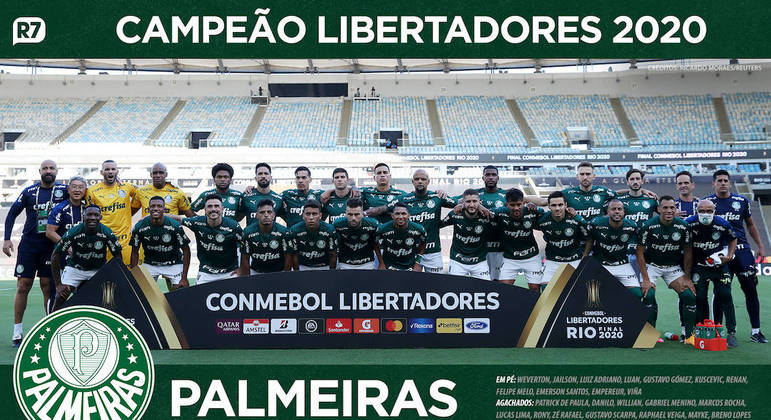

Fundação do clube
Conhecida popularmente como Palmeiras é um clube poliesportivo brasileiro da cidade de Sao Paulo, capital do estado homonimo. Foi fundado em 26 de agosto de 1914 e suas cores, presentes no escudo e bandeira oficial, sao o verde e branco O vermelho, presente desde sua fundaçao em 1914, foi excluído durante a Segunda Guerra Mundial, por pressao do governo nacional, na mesma reuniao que formalizou a mudança de nome de Palestra Itália para Palmeiras.
Historia do Clube
A História da Sociedade Esportiva Palmeiras começa no dia 26 de agosto de 1914, quando o clube foi fundado por imigrantes italianos na cidade de Sao Paulo com o nome de Palestra Italia. A primeira partida da equipe foi disputada em 24 de janeiro de 1915 contra o Savoia, do atual municipio de Votorantim, na época distrito de Sorocaba, no interior paulista, e contou com a vitória palestrina por 2 a 0, com gols de Bianco e Alegretti.
Depois de colecionar nas décadas de 20 e 30 do Século XX uma serie de titulos paulistas e conquistar uma quantidade relevante de torcedores, o clube foi obrigadoa mudar seu nome para Sociedade Esportiva Palmeiras em 1942, por ocasiao da Segunda Guerra Mundial, já que o Brasil, governado pelo entao presidente Getulio Vargas, declarou guerra aos países do "Eixo" (Alemanha, Italia e Japao) e se alinhou aos paises "Aliados", (Estados Unidos, Uniao Soviética, Reino Unido, França, e outros).
Na sua primeira partida com o novo nome de Palmeiras, em 20 de setembro de 1942, sagrou-se campeao paulista com uma vitória sobre o Sao Paulo no Estádio do Pacaembu, no episódio histórico que ficou conhecido como "Arrancada Heroica". Nas décadas seguintes, com grandes jogadores, como Oberdan Cattani, Waldemar Fiume, Villadoniga, Jair Rosa Pinto, Liminha e Rodrigues, ampliou seu acervo de títulos e se consolidou com uma das equipes mais importantes do Brasil.
Na virada da primeira para a segunda metade do século, o alviverde atingiu um grande momento, conquistando seu primeiro e um dos mais importantes títulos internacionais. O clube paulistano venceu a Juventus, da Itália, no Estádio do Maracana, para um publico de mais de 100 mil pessoas, na final da Copa Rio de 1951, competiçao que foi reconhecida posteriormente pela FIFA com um Mundial de Clubes.
Entre 1958 e 1970, nos "anos de ouro" do futebol brasileiro, quando o Pais conquistou seus tres primeiros titulos mundiais de futebol e encantou o planeta, o Palmeiras era um dos poucos times que conseguiam ser pareo para o Santos de Pelé, considerado um dos maiores times do mundo em todos os tempos.
Em 1965, foi inaugurado o Estadio Magalhaes Pinto, o "Mineirao", e, para coroar os festejos da inauguraçao, organizou-se um amistoso entre a Seleçao Brasileira e a do Uruguai. Pela primeira vez na história do futebol brasileiro, um time, a Sociedade Esportiva Palmeiras, foi convidado para compor toda a delegaçao, do tecnico ao massagista, do goleiro ao ponta-esquerda, incluindo os reservas. A partida foi realizada no dia 7 de setembro (data da independencia brasileira), e o Palmeiras derrotou o Uruguai por 3 a 0.
Durante essas decadas de ouro do futebol brasileiro, por conta da tecnica apurada e pelo toque de bola refinado de seus jogadores, o Palmeiras foi comparado durante anos a uma "Academia de Futebol", que teve entre os principais protagonistas, em duas fases distintas e consecutivas, grandes nomes do futebol, como Ademir da Guia, Dudu, Julinho Botelho, Djalma Santos, Servilio, Tupãzinho, Luis Pereira, Leivinha, Cesar e Leao.
Coincidentemente, apos o maior icone da Academia, o meia Ademir da Guia, encerrar a carreira em 1977, o Palmeiras ficou durante um longo periodo sem conquistar titulos. Conhecido como "Divino" por conta da grande classe no trato da bola e pela eficiencia, Ademir é considerado o maior jogador da historia do alviverde, com a impressionante marca de 901 jogos disputados, 153 gols marcados e dezenas de titulos conquistados, entre campeonatos oficiais e torneios amistosos nacionais e internacionais.
O jejum de titulos entre 1976 e 1993 foi o mais longo da historia do clube e exigiu paciencia da torcida, que viu seus maiores rivais dominarem as conquistas da decada de 1980. O martirio alviverde foi sepultado depois que a diretoria idealizou uma inedita parceria para a gestao do futebol com a empresa multinacional de origem italiana Parmalat. Tal acordo, possibilitou a contrataçao de grandes jogadores e tecnicos competentes, que recolocaram o Palmeiras na trilha das conquistas.
Sob o comando de Vanderlei Luxemburgo, o time formado por craques, como Evair, Edmundo, Roberto Carlos, Cesar Sampaio, Mazinho, Edilson e Zinho, goleou o arquirrival Corinthians por 4 a 0 na final do Campeonato Paulista de 1993, encerrando o incimodo tabu. O mesmo time conquistaria o Torneio Rio-Sao Paulo daquele ano e o Campeonato Brasileiro. No ano seguinte, o alviverde obteve ainda os bicampeonatos paulista e brasileiro, com o meia Rivaldo sendo o destaque na conquista nacional.
Luiz Felipe Scolari, o FelipaoNa segunda metade do periodo de parceria com a Parmalat e sob o comando de Luiz Felipe Scolari, o Palmeiras chegou a tres conquistas inéditas: a Copa do Brasil e a Copa Mercosul, ambas de 1998, e a Copa Libertadores da América de 1999. Nestes tres titulos, alguns dos destaques da equipe foram os jogadores Arce, Alex, Cleber, Oseas, Paulo Nunes, Junior, Euller, alem dos ja citados Zinho, Evair e Cesar Sampaio, e dos goleiros Velloso e Marcos, este ultimo que se transformou num dos maiores idolos da historia alviverde.
Depois do novo periodo de alegria, que alem de titulos contou com duas eliminaçoes historicas do Corinthians na Copa Libertadores da America, e ja com o termino da parceira com a Parmalat, a torcida alviverde conviveu com a enorme tristeza do rebaixamento no Campeonato Brasileiro de 2002. Numa demonstraçao de paixao e fidelidade, apoiou o Palmeiras na conquista da Serie B de 2003. A primeira decada do Seculo XXI foi um periodo de tentativas de reestruturaçao politica e administrativa para o clube, que voltou a levantar um titulo de primeira divisao somente em 2008, quando conquistou o Campeonato Paulista.
Em 2012, ano no qual o idolo Marcos encerrou a carreira, o Palmeiras voltou a levantar um titulo nacional apos 12 anos. Comandada novamente por Luiz Felipe Scolari, a equipe alviverde conquistou a Copa do Brasil de 2012, de forma invicta, depois de levar a melhor contra o Coritiba na final da competiçao. No mesmo ano que ratificou a marca de maior campeao nacional da história, o alviverde amargou um novo rebaixamento para a Série B do Campeonato Brasileiro, depois de uma campanha marcada por uma s serie de construçoes de jogadores, mau planejamento, elenco limitado e uma administraçao bastante questionada de seu presidente Arnaldo Tirone.
No ano seguinte, ja sob a administraçao do presidente Paulo Nobre e com uma campanha com clara superioridade da equipe ante as demais, o Palmeiras subiu novamente a primeira divisao com 6 rodadas de antecedencia, garantindo a participaçao na Serie A de 2014, ano de seu centenário, quando escapou por pouco de um novo rebaixamento e quando teve a inauguraçao de sua nova arena como grande motivo de festa.
Em 2015, quando a nova Arena teve seu primeiro ano completo de existencia, o local foi palco de vários jogos com recorde de publico e renda e fechou o ano com a conquista palmeirense do tricampeonato da Copa do Brasil, disputa que teve o goleiro Fernando Prass como grande heroi. Em 2016, sob o comando do tecnico Cuca e com jogadores decisivos, como Dudu, Gabriel Jesus, Moises e Zé Roberto, o alviverde confirmou seu retorno as conquistas de grande porte e chegou ao seu nono título do Campeonato Brasileiro, depois de liderar 26 das 38 rodadas da competiçao e realizar a segunda melhor campanha da historia dos pontos corridos. Apos obter o vice-campeonato em 2017, o Palmeiras obteve o decimo título da competiçao em 2018, com mais marcas historicas, como a maior invencibilidade e o melhor turno da história da era do Brasileirao de pontos corridos, tendo como destaques os jogadores Dudu, Willian e Bruno Henrique, sob o comando novamente de Felipao.
Na temporada de 2020, em meio a pandemia de covid-19, o Palmeiras conquistou o bicampeonato da Copa Libertadores da Amarica, com uma equipe comandada pelo tecnico portugues Abel Ferreira e com jogadores decisivos, como Weverton, Gustavo Gomez, Vina, Raphael Veiga, Rony e Luiz Adriano, alem de revelaçoes vindas da base, como os jogadores Gabriel Menino, Danilo e Patrick de Paula. Apos a competição de 2020 ter sido atrasada em virtude da doença que atingiu o planeta, a fase semifinal e a final foram disputadas em janeiro do ano seguinte. A equipe eliminou o favorito River Plate nas semifinais e, na decisçao em jogo unico, disputada no Estadio do Maracana, derrotou o Santos, sagrando-se campeao com a melhor campanha da competiçao. O segundo título do Palmeiras na Libertadores veio 21 anos apos a conquista de 1999. Além da conquista da Libertadores, a temporada marcou a troplice coroa alviverde, já que ainda foram conquistados os títulos do Campeonato Paulista e da Copa do Brasil, quando o clube chegou ao tetracampeonato.
Titulos Brasileiros
O Palmeiras é a equipe brasileira com o maior numero de títulos de abrangencia nacional conquistados, obtendo a maioria das competiçoes oficiais que disputou criadas no País, inicialmente pela Confederçao Brasileira de Desportos (CBD) e, a partir de 1980, pela Confederaçao Brasileira de Futebol (CBF).[20] O alviverde possui 15 conquistas deste porte, com destaque maior para seus dez títulos do Campeonato Brasileiro (atual recordista):[22] 1960, 1967,(1) 1967,(2) 1969, 1972, 1973, 1993, 1994, 2016 e 2018. Além destes campeonatos, o Palmeiras já venceu no pais as Copas do Brasil de 1998, 2012, 2015 e de 2020 e a Copa dos Campeoes de 2000, competicoes tambem organizadas pela entidade máxima do futebol brasileiro.
Titulos Paulistas
No Estado de Sao Paulo, o Palmeiras tambem é um dos principais vencedores, com 23 conquistas do Campeonato Paulista de Futebol e mais dois titulos extra da mesma competiçao. Em 1996, o alviverde conquistou o estadual daquele ano com a melhor campanha de uma equipe na era profissional neste campeonato. Na ocasiao, foi campeao com 83 pontos ganhos em 90 possiveis, com um indice de aproveitamento de 92,2% dos pontos disputados e 102 gols marcados em 30 jogos realizados. Desde entao, esta marca jamais foi alcançada por qualquer outra equipe na competiçao.
Titulos Libertadores
O Palmeiras tem duas libertadores da america, uma conqistada em 1999 com o comando de Luis Felipe Scolari, e outra em 2021 com o Tecnico Portugfues Abel Ferreira.
Titulos Copa do Brasil
O palmeiras atualmente tem 4 titulos da Copa do brasil sendo eles nos anos de 1998, 2012 2015 e 2020.